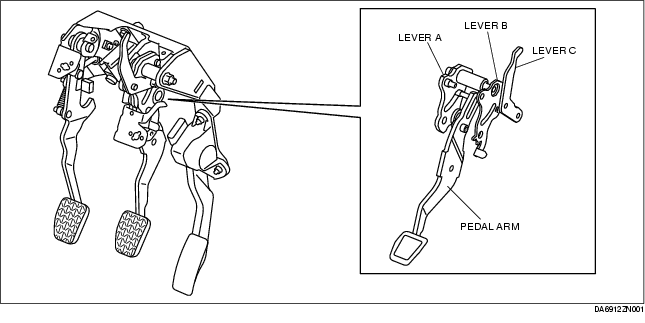
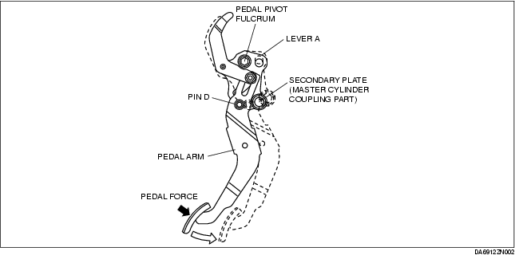
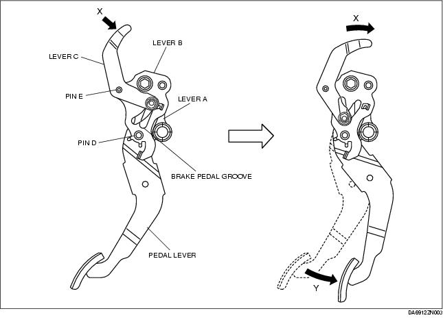

INTRUSION-MINIMIZING BRAKE PEDAL CONSTRUCTION/OPERATION
id041100101000
Construction
• The intrusion-minimizing brake pedal consists of the following three main parts
-
- Pedal arm
-
- Lever A
-
- Lever B
-
- Lever C

Operation
During regular braking
-
• When the brake pedal is operated, the pedal force is transmitted from the pedal arm to lever A. Because the pedal arm and lever A is secured with pin D, the push rod of the master cylinder is pushed by the secondary plate of lever A to operate the brake.

During Intrusion-minimizing Operation
-
• In a frontal collision, the brake pedal is forced rearward by the rearward collapse of the instrument panel.
-
• Due to this, lever C interferes with the instrument panel member and a force in the direction of X is input to lever C.
-
• Based on this input in the direction of X, a force in the rotation direction is applied to lever C with pin E as the fulcrum and lever C moves along the grooves of lever A and B.
-
• Because the pedal arm is secured with lever A and B, and pin D, a force in the rotation direction is applied with pin D as the fulcrum based on the movement of lever C and the groove on the pedal arm, and moves in the direction of Y.
-
• Due to this movement of the pedal arm in the direction of Y, impact force to the lower body of the driver is softened.
